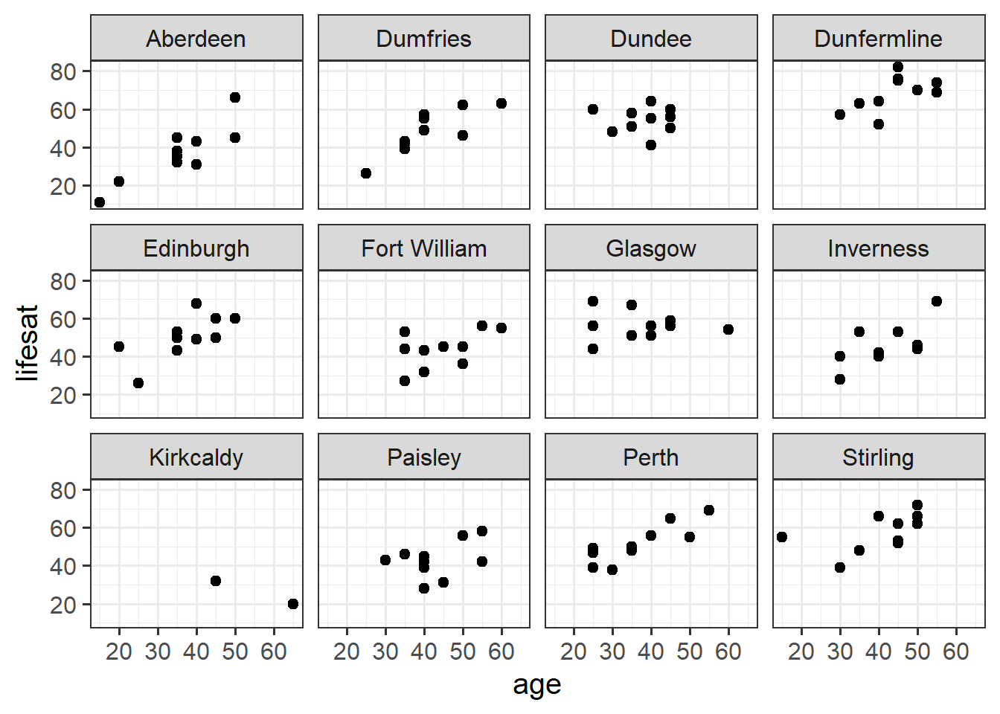
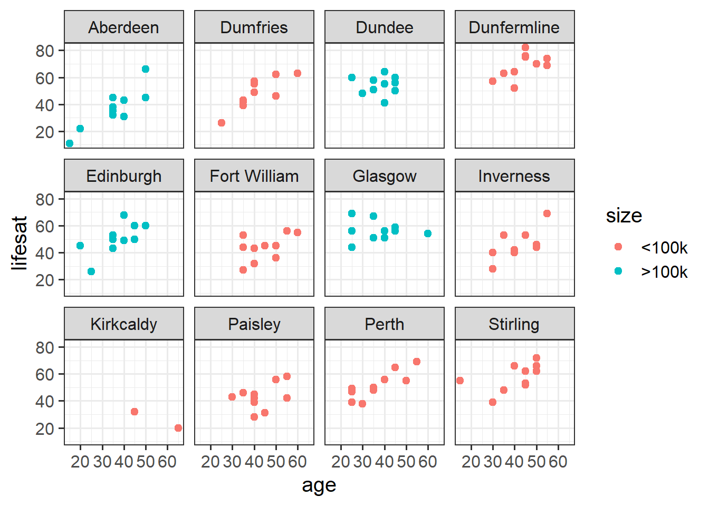
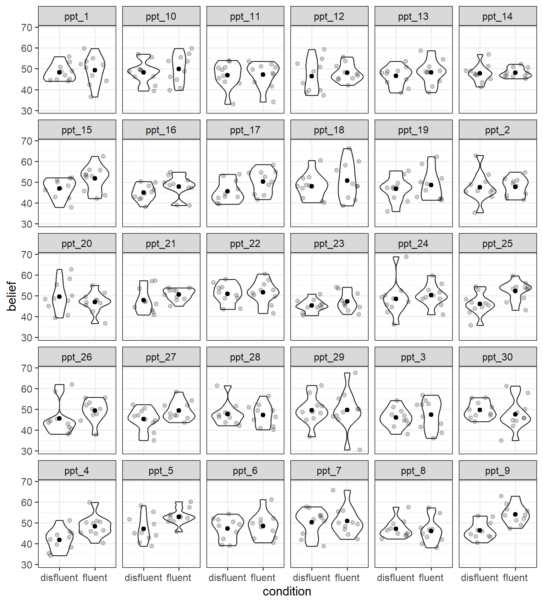
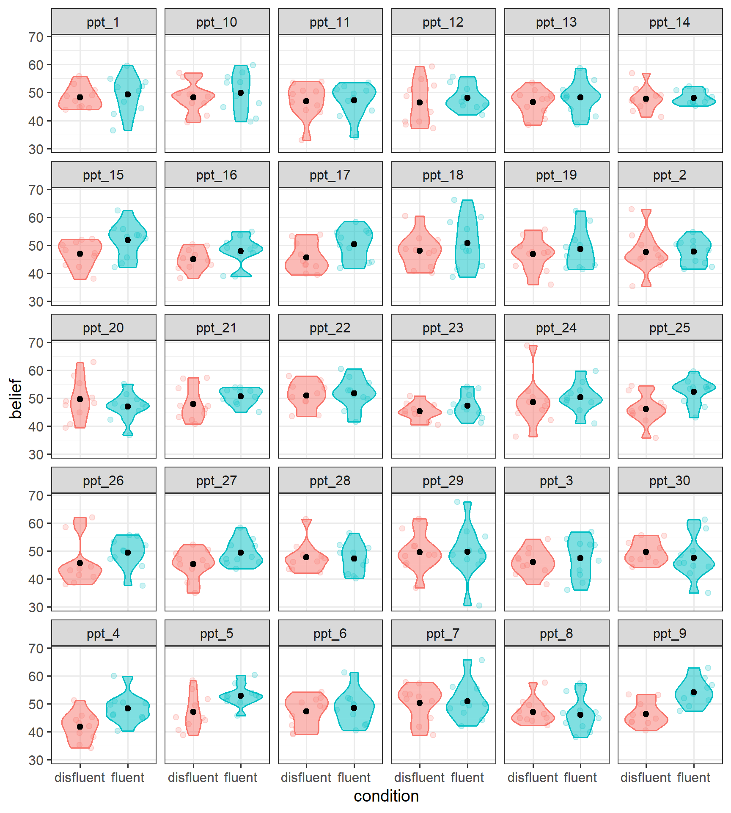
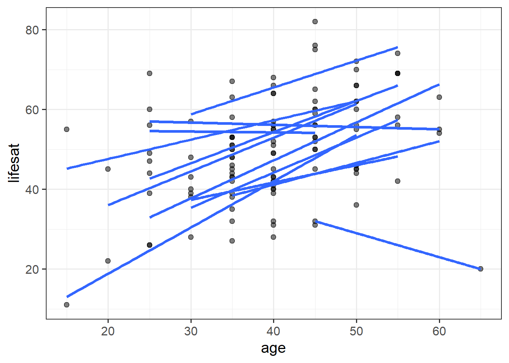
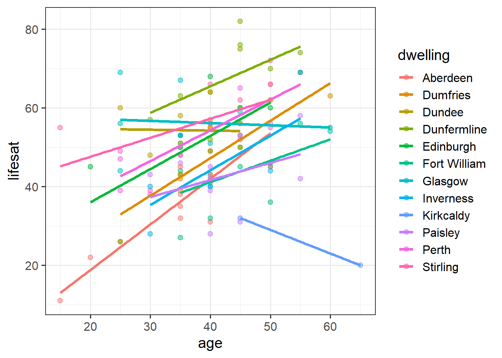
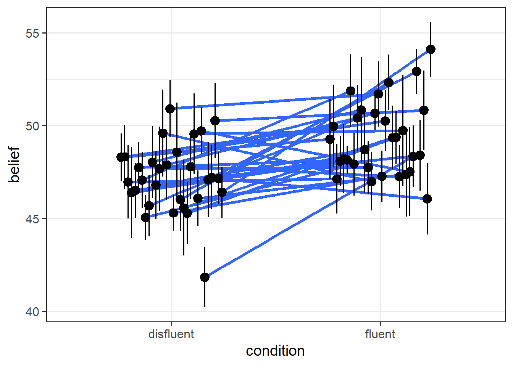
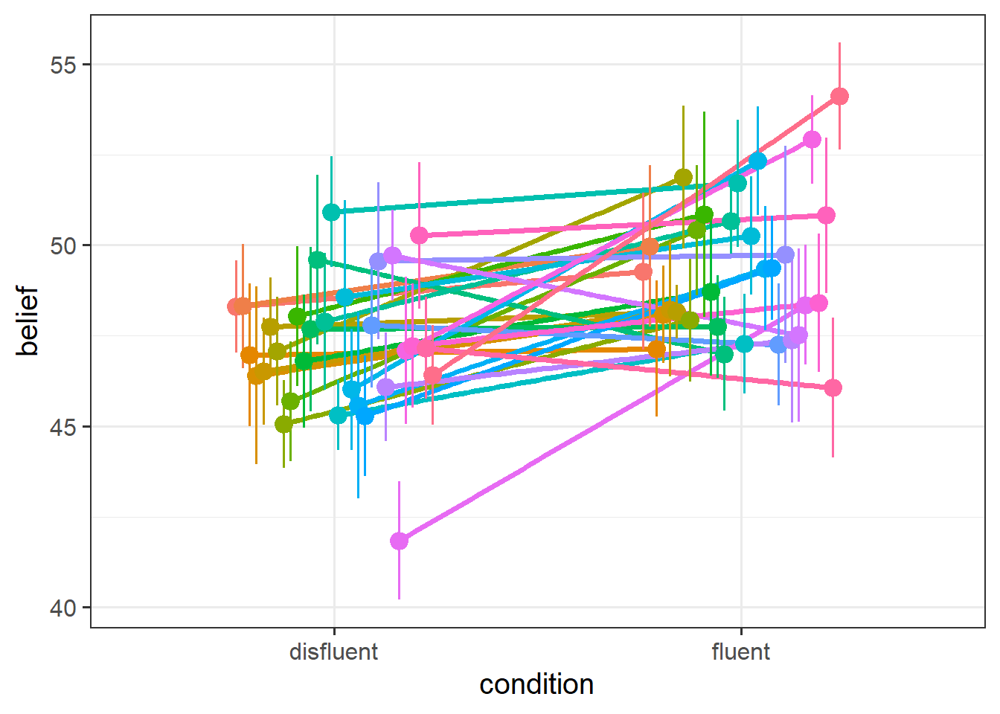

| variable | description |
|---|---|
| age | Age (years) |
| lifesat | Life Satisfaction score |
| dwelling | Dwelling (town/city in Scotland) |
| size | Size of Dwelling (> or <100k people) |
Plot group-structured data
When you choose a way to plot your data, you are choosing the story you want your data to tell. If you’re telling a story about how groups within your data vary, then it’s useful for your plots to show your data’s grouping structure. Here are a couple ways to do that.
The example data sets
Example 1: Life satisfaction in Scotland
These data come from 112 people across 12 different Scottish dwellings (cities and towns). Information is captured on their ages and a measure of life satisfaction. The researchers are interested in if there is an association between age and life-satisfaction.
Data are available at https://uoepsy.github.io/data/lmm_lifesatscot.csv.
lifesatscot <- read_csv("https://uoepsy.github.io/data/lmm_lifesatscot.csv")In this dataset, the predictor age is continuous and varies within the grouping variable dwelling.
Example 2: Hesitation and believability
These data are simulated to represent data from 30 participants who took part in an experiment designed to investigate whether fluency of speech influences how believable an utterance is perceived to be.
Each participant listened to the same 20 statements, with 10 being presented in fluent speech, and 10 being presented with a disfluency (an “erm, …”). Fluency of the statements was counterbalanced such that 15 participants heard statements 1 to 10 as fluent and 11 to 20 as disfluent, and the remaining 15 participants heard statements 1 to 10 as disfluent, and 11 to 20 as fluent. The order of the statements presented to each participant was random. Participants rated each statement on how believable it is on a scale of 0 to 100.
Data are available at https://uoepsy.github.io/data/erm_belief.csv.
| variable | description |
|---|---|
| ppt | Participant Identifier |
| trial_n | Trial number |
| sentence | Statement identifier |
| condition | Condition (fluent v disfluent) |
| belief | belief rating (0-100) |
| statement | Statement |
belief <- read_csv("https://uoepsy.github.io/data/erm_belief.csv")In this dataset, the predictor condition is categorical and varies within the grouping variable ppt.
Facetting by group
By including + facet_wrap(~ VARIABLE) in your ggplot code, you can make separate little plots for each level of VARIABLE.
Example 1: lifesatscot
We want to visualise the association between age and lifesat in each Scottish dwelling. Each dot represents data from one person from the given area.
lifesatscot |>
ggplot(aes(x = age, y = lifesat)) +
geom_point() +
facet_wrap(~ dwelling)
Add colour by dwelling
size
lifesatscot |>
ggplot(aes(x = age, y = lifesat, colour = size)) +
geom_point() +
facet_wrap(~ dwelling)
Example 2: belief
We want to visualise the association between condition and belief for each ppt in the experiment. The violins represent the density of belief data for each person in each condition, the grey dots represent individual observations from the given participant for the given condition, and the black dots represent the condition means for each participant.
belief |>
ggplot(aes(x = condition, y = belief)) +
geom_violin() +
geom_jitter(alpha = 0.2) +
stat_summary(fun = mean, geom = 'point') +
facet_wrap(~ ppt)
Add colour by
condition
belief |>
ggplot(aes(x = condition, y = belief, fill = condition, colour = condition)) +
geom_violin(alpha = 0.5) +
geom_jitter(alpha = 0.2) +
stat_summary(fun = mean, geom = 'point', colour = 'black') +
facet_wrap(~ ppt) +
theme(legend.position = 'none')
Separate geoms per group
Some geoms (that is, some shapes or layers in ggplot) respond to the group aesthetic.
For example, if you set aes(group = VARIABLE), then geom_smooth() will plot one line of best fit for each group in VARIABLE.
Example 1: lifesatscot
Remember we want to look at the association between age and lifesat in each Scottish dwelling.
lifesatscot |>
ggplot(aes(x = age, y = lifesat, group = dwelling)) +
geom_point(alpha = 0.5) +
geom_smooth(method = lm, formula = 'y~x', se = FALSE)
Add colour by
dwelling
lifesatscot |>
ggplot(aes(x = age, y = lifesat, group = dwelling, colour = dwelling)) +
geom_point(alpha = 0.5) +
geom_smooth(method = lm, formula = 'y~x', se = FALSE)
Example 2: belief
The statistical geom stat_summary() will also respond to the group = VARIABLE aesthetic. If we write stat_summary(geom = 'pointrange'), then we’ll get a dot for each level of VARIABLE and an error bar that shows one standard error above and below that mean.
To displace the dots by a random horizontal amount, we can include position = position_dodge(width = 0.5) (otherwise they’ll all be overlaid in a single vertical line, which is tough to read. Try it and see!).
belief |>
ggplot(aes(x = condition, y = belief, group = ppt)) +
geom_smooth(method = 'lm', se = F, position = position_dodge(width = 0.5)) +
stat_summary(geom = 'pointrange', position = position_dodge(width = 0.5))
Add colour by
ppt
belief |>
ggplot(aes(x = condition, y = belief, group = ppt, colour = ppt)) +
geom_smooth(method = 'lm', se = F, position = position_dodge(width = 0.5)) +
stat_summary(geom = 'pointrange', position = position_dodge(width = 0.5)) +
theme(legend.position = 'none') # lots of ppts so legend is not v informative
Linked flash cards
Outgoing links
- TODO
Backlinks
- TODO